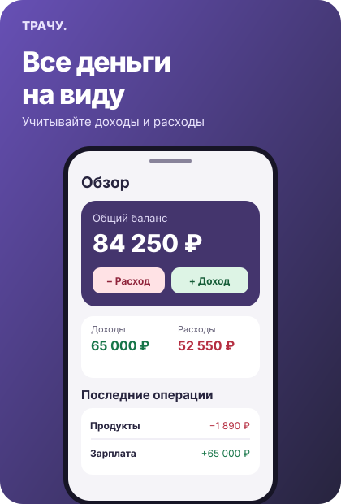
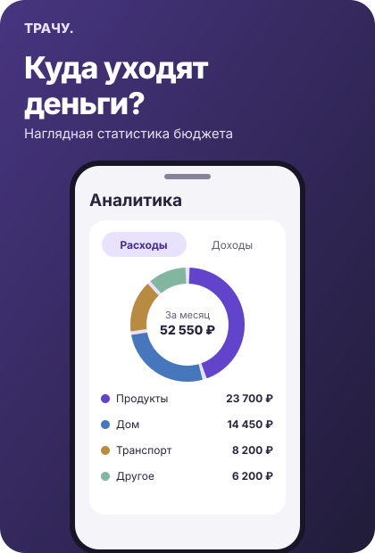
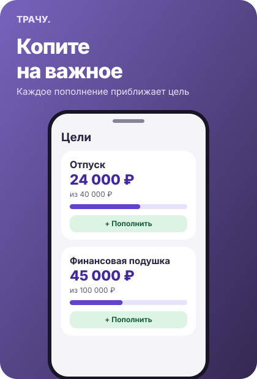

Записывайте за секунды
Доходы, расходы, возвраты, категории и чеки. Добавляйте операции прямо с виджета на рабочем столе.
Бесплатно · Android
Знайте, сколько у вас денег, куда они уходят и сколько осталось до мечты. Личные финансы в одном удобном приложении.
Без регистрации · Android 8.0+ · Основные функции без интернета
Общий баланс
84 250 ₽+12 450 ₽ за месяц
Иллюстрация · суммы условные
Возможности
От чашки кофе до крупной покупки — всё, что важно для вашего бюджета.
Доходы, расходы, возвраты, категории и чеки. Добавляйте операции прямо с виджета на рабочем столе.
Наличные, карты и накопительные счета в разных валютах. Переводы и валютный конвертер.
Наглядные диаграммы доходов и расходов, сравнение периодов и бюджеты по категориям.
Создавайте цели, пополняйте накопления, следите за прогрессом и историей.
Учитывайте, кому должны вы и кто должен вам, отмечайте платежи и фактически уплаченные проценты.
Календарь платежей, регулярные операции, напоминания и прогноз бюджета.
Познакомьтесь с ТРАЧУ.
Всё самое важное — в трёх наглядных примерах.



Промо-иллюстрации возможностей приложения. Суммы приведены для примера.
Как начать
Выберите валюту и укажите, сколько денег у вас сейчас.
Введите сумму, выберите категорию и сохраните.
Анализируйте расходы, планируйте платежи и копите.
Конфиденциальность
Мы не храним финансовую историю на своих серверах. Записи остаются на вашем устройстве. Вы сами решаете, когда создавать копии, что экспортировать и с кем делиться.
Политика конфиденциальностиЧастые вопросы
ТРАЧУ. — бесплатное приложение с рекламой. В настройках можно отключить персонализацию объявлений. Обычная реклама при этом остаётся, все функции доступны бесплатно.
Нет. Вы добавляете записи самостоятельно или импортируете поддерживаемые файлы. Приложение не подключается к банкам и не совершает платежи.
Да. Учёт, аналитика и планирование работают без интернета. Сеть нужна для загрузки официальных валютных курсов и рекламы.
Да. Создайте защищённую паролем резервную копию, перенесите файл и восстановите данные на новом устройстве. Не теряйте пароль.
В настройках можно выбрать светлую, тёмную или системную тему. Если вам нужны подсказки, обучение можно повторить в разделе «Помощь».
Приложение готовится к публикации в RuStore. Ссылка на скачивание появится здесь после выхода.
ТРАЧУ. для Android
Бесплатное приложение для Android 8.0 и новее. Скоро в RuStore.